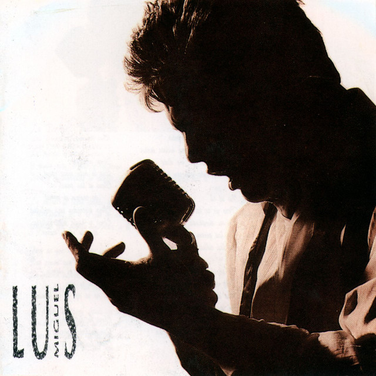
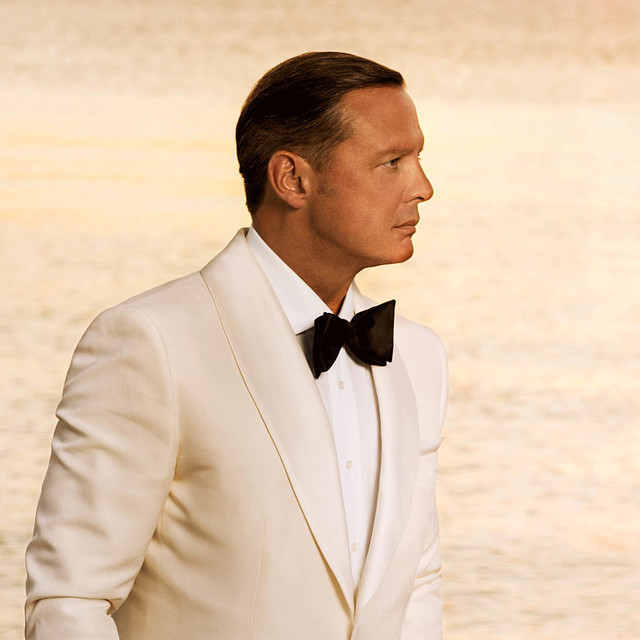
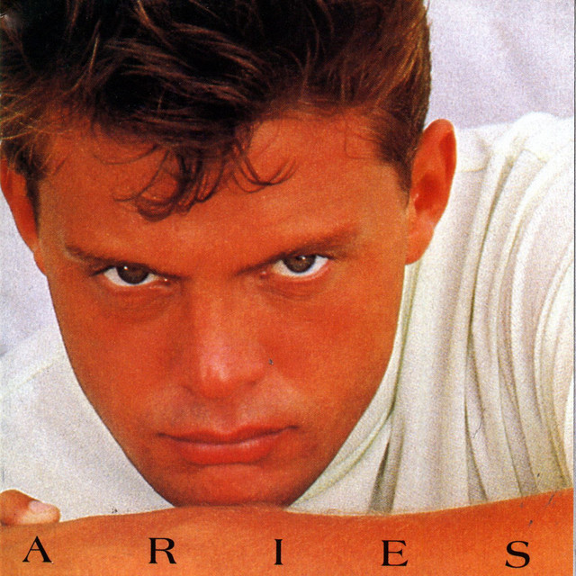
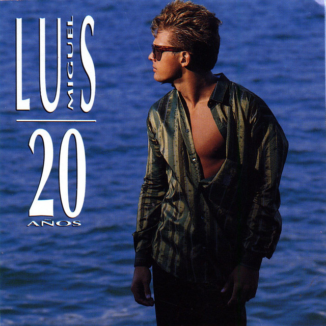

Romance
Romance (1991)
Boleros clásicos
Ver temas
- 1. No Me Platiques Más
- 2. Inolvidable
- 3. La Puerta
- 4. Contigo en la Distancia
- 5. Mucho Corazón
Toda una vida de romanticismo con los boleros que marcaron una época.


Romance (1991)
Boleros clásicos

ARIES (1993)
Pop latino

20 años (1990)
Balada
Luis Miguel Gallego Basteri es uno de los cantantes más importantes y exitosos de la música en español. Conocido por su inconfundible estilo romántico, su absoluta seguridad en el escenario y su poderosa voz, ha conquistado géneros que van desde el pop hasta el mariachi.
Consolidado desde muy joven como "El Sol de México", se convirtió en un ícono cultural y el artista latino más vendido de los años 90 gracias a su histórica serie de discos "Romance", logrando que el bolero clásico trascendiera fronteras y marcara a toda una época.